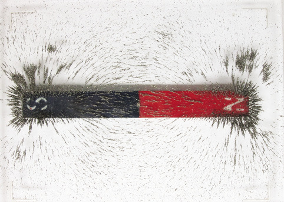

Magnetisme
In hierdie hoofstuk gaan jy leer oor magnetisme. Jy gaan magnetiese velde ondersoek en jy gaaneksperimente doen om uit te vind watter tipes materiaal magneties is.
Figuur 1: Die agterkant van ’n luidspreker kan gebruik word om sekere items mee op te tel!
Wat is magnetisme?
Sommige mense gebruik yskasmagnete om notas of lyste teen yskasdeure op te plak. Daar is selfs magnete wat in die vorm van woorde of letters is, wat teen yskasdeure geplak kan word. Die magnete laat die letters aan die metaal van die yskasdeure plak.
Kan jy aan ander maniere dink oor hoe ons magnete in ons daaglikse lewens kan gebruik?
In hierdie hoofstuk gaan jy oor verskillende tipes magnete leer en ook leer hoe hulle gebruik word in ons alledaagse lewens.
Magnetisme is ’n krag wat voorwerpe met ’n magnetiese materiaal (soos yster) binne hulle, kan aantrek (nader bring) of weerstaan (weg stoot).
Duisende jare gelede het die mens ontdek dat ’n sekere tipe klip, yster aantrek. Hierdie klip is magneetsteen genoem. Mense het in daardie tyd geglo dat hierdie klip towerkragte het. Dele van die magneetsteen het ook ander dele van dieselfde klip aangetrek of weggestoot.
Die vermoë om yster aan te trek word magnetisme genoem.
Ons weet nou dat magneetsteen ’n materiaal genaamd magnetiet bevat, en dit is ’n tipe ysteroksied. Ysteroksied is ’n chemiese samestelling van yster en suurstof. ‘Magneetsteen’ is ’n natuurlike magneet.
Figuur 2: Magneetsteen trek stukkies yster aan.
Alle magnete is in staat om ander magnete of magnetiese voorwerpe aan te trek. Magnetiese voorwerpe bestaan uit yster of sommige ander materiale.
Eksperimenteer met ’n magneet deur skuifspelde op te tel. Jy sal agterkom dat wanneer jy die magneet ver weg hou, niks gebeur nie. Sodra jy die magneet nader aan die skuifspelde beweeg, sal die skuifspelde skielik aan die magneet vasplak.
Dink na oor die volgende vrae:
- Watter eienskappe van die magneet veroorsaak dat hierdie spesifieke
voorwerpe aangetrek word?
- Moet ’n magneet aan ’n magnetiese voorwerp raak om dit nader te trek?
Om meer uit te vind oor magnetisme, doen die volgende ondersoek.
Aksienavorsing
Jy het die volgende nodig vir hierdie aktiwiteit:
- ’n liniaal,
- ’n skuifspeld, en
- ten minste drie verskillende tipes magnete.
Plaas die liniaal plat neer op jou lessenaar. Plaas die skuifspeld so dat dit in lyn is met die nulmerk op die liniaal. Plaas een magneet aan die ander end van die liniaal. Beweeg die magneet stadig nader aan die skuifspeld, soos in die diagram gewys word. Die oomblik wanneer die skuifspeld na die magneet beweeg, moet jy ophou om die magneet te beweeg.

Figuur 3.
Kyk na die meting op die liniaal om te sien hoe ver die magneet en die skuifspeld van mekaar af was voor hulle na mekaar begin beweeg het.
Doen die eksperiment weer met al jou magnete.
1. Vul die tabel in om die afstand waarop elke magneet die skuifspeld aangetrek het, aan te dui.
|
Afstand van skuifspeld |
|
|
Magneet 1. |
|
|
Magneet 2 |
|
|
Magneet 3 |
|
|
Magneet 4 |
2. Watter magneet is die sterkste?
3. Watter magneet is die swakste?
Wat kan ons hieruit leer?
Daar bestaan ’n onsigbare magnetiese veld rondom ’n magneet. Die veld is sterker nader aan die magneet, en swakker wanneer dit verder weg is. Die magneet het geen effek op die skuifspeld totdat dit naby genoeg is om in die magnetiese veld te wees nie.
Sterker magnete kan magnetiese materiale van groter afstande aantrek as swakker magnete. Die rede hiervoor is dat ’n sterker magneet ’n groter magnetiese veld het.
’n paar vrae om te beantwoord
1. Noem drie situasies waar jy magnete gesien of gebruik het.
2. Hoe sal jy kan uitvind of ’n voorwerp magneties is of nie?
3. Jy het twee magnete, een is magneet A, wat die skuifspeld van 10 cm ver kan aantrek. Die ander magneet is magneet B, wat die skuifspeld van 12 cm ver kan aantrek. Watter magneet is die sterkste? Verduidelik jou antwoord.
4. Hoekom kan ’n magneet oor ’n afstand ’n effek op die skuifspeld hê? Verduidelik jou antwoord in jou eie woorde.
Permanente magnete en die magnetiese velde
Jy het geleer dat magnete sekere voorwerpe aantrek omdat die voorwerpe ’n magnetiese veld om hulle het. ’n Voorwerp wat deur ’n magneet beweeg word, word ’n “tydelike” magneet genoem. ’n Tydelike magneet is nie heeltyd ’n magneet nie. Wanneer jy die skuifspeld binne die magnetiese veld van die magneet beweeg, word die skuifspeld ook ’n magneet. Die skuifspeld verloor sy magnetiese veld baie vinnig.
Wanneer die noordpool van ’n magneet vrylik aan ’n draad sou kon hang, sou dit na die noordpool van die Aarde wys.
Figuur 4: Die noordpool van ’n magneet wys na die Aarde se magnetiese noordpool.
’n Permanente magneet behou sy magnetiese eienskappe vir ’n lang tyd. ’n Tydelike magneet is slegs magneties solank as wat dit in die magnetiese veld van die permanente magneet is.
’n Magneetsteen is ’n natuurlike, permanente magneet. Jy gaan permanente magnete wat kunsmatig gemaak is, bestudeer. Hierdie magnete het ’n noordpool en ’n suidpool, maar die magnete kan in verskillende vorms voorkom. Daar is twee basiese vorms van magnete wat jy gaan gebruik: staafmagnete en hoefmagnete.

Figuur 5: Staafmagneet.

Figuur 6: Hoefmagneet.
Staafmagnete is reghoekig, met ’n noordpool aan die een kant van die staaf en ’n suidpool aan die teenoorgestelde kant van die staaf. Dit beteken dat die pole ver van mekaar af is.
Hoefmagnete het ook ’n noord- en ’n suidpool, maar die staaf is gebuig in die vorm van ’n perdehoef. Hierdie buiging bring die noord en die suid pole nader aanmekaar as wat hulle in die geval van ’n staafmagneet is.
Kom ons ondersoek wat die noord en suid pole van die magneet beteken.
Ondersoek magneetpole
Vir hierdie ondersoek het jy twee staafmagnete nodig, met die noord- en suidpool daarop gemerk. Werk in klein groepe.
1. Hou die staafmagneet in een hand en plaas die ander staafmagneet op jou lessenaar. Bring die noordpool van die magneet in jou hand naby aan die noordpool van die magneet op jou lessenaar. Skryf neer wat gebeur wanneer jy die noordpole van die twee staafmagnete na mekaar toe bring.

Figuur 7
2. Bring nou die suidpool van die een staafmagneet nader aan die suidpool van die ander staafmagneet. Skryf neer wat gebeur wanneer jy die suidpole van die twee staafmagnete na mekaar toe bring.

Figuur 8
3. Bring nou die noordpool van die een staafmagneet nader aan die suidpool van die ander staafmagneet. Skryf neer wat gebeur wanneer jy die noordpool nader aan die suidpool bring.

Figuur 9
Jy moes agtergekom het dat, soos die noordpole nader aan mekaar gebring is, daar ’n “weerstand” is om te naby te kom. Dit is hoekom jy dit moeilik gevind het om die noord- en suidpole aan mekaar te laat raak. Wanneer jy egter die noordpool nader aan die suidpool bring, trek hulle mekaar aan.
Wanneer die pole dieselfde is, stoot die krag hulle weg van mekaar maar sodra die pole verskil, trek die krag hulle na mekaar toe aan. Dus, ’n noordpool en ’n suidpool trek mekaar aan, terwyl ’n noordpool en ’n noordpool, en ’n suidpool en suidpool, mekaar weerstaan.
Die magnetiese veld om elke magneet het rigting.
Ons sê dat die teenoorgestelde pole van ’n magneet mekaar aantrek, terwyl gelyke pole van ’n magneet mekaar wegstoot.
Visualisering van magnetiese velde (uitbreiding)
Alhoewel ons nie magnetiese velde kan sien nie, kan hulle ontdek word deur gebruik te maak van ystervylsels. Werk in klein groepe om hierdie ondersoek te doen.
Jy het die volgende nodig vir hierdie aktiwiteit:
- twee staafmagnete,
- ’n stuk ferm, wit papier, net-net groter as die magnete, en
- ystervylsels.
Ystervylsels is klein stukkies yster wat lyk soos ’n fyn poeier. Wees versigtig – die vylsels sal aan die magneet vasplak, so jy moet seker maak dat jy ten alle tye die papier tussen die vylsels en die magneet hou.
1. Plaas een van die staafmagnete op die lessenaar voor jou.
2. Plaas die stuk wit papier bo-oor die magneet.
3. Trek liggies die buitelyne van die staafmagneet op die papier en merk die posisies van die noordpool en suidpool.
4. Sprinkel, baie versigtig, die ystervylsels op die papier in die posisie waar die magneet sal wees.
Jy sal sien dat die ystervysels ’n patroon om die magneet maak. Versprei die vylsels versigtig om die magneet sodat jy die hele patroon kan sien. Let op na die plekke waar daar baie ystervylsels, baie naby aanmekaar is, en die plekke waar die ystervylsels meer verspreid is.
5. Gebruik die spasie hieronder om die patroon te teken wat die ystervylsels maak.

Die ystervylsels wys die patroon van die magnetiese veld. Elke klein stukkie yster tree soos ’n magneet op en beweeg in posisie saam met die magnetiese veld om die staafmagneet.
Indien jy nie die magnetiese veldpatroon self sien nie, kyk na die foto van ystervylsels om ’n staafmagneet:

Figuur 10
Om die magnetiese veld om die magneet te teken gebruik jy lyne om die pad van die ystervylsels voor te stel. Figuur 10 wys hierdie lyne. Hierdie word die magnetiese veldlyne genoem. Die lyne het altyd pyltjies wat die rigting aanwys van die noordpool tot die suidpool.

Figuur 11
Let op die volgende inligting omtrent die magnetiese veldlyne in Figuur 11:
- Die veldlyne het pyle op hulle.
- Die veldlyne begin by die noordpool en beweeg na die suidpool.
- Die veldlyne is nader aanmekaar by die pole.
- Die magnetiese veld is sterker op die plekke waar die lyne nader aanmekaar is.
- Hoe verder weg van die magneet af, hoe verder en verder van mekaar is die lyne, wat daarop dui dat die magnetiese veld baie swakker is.
Herhaal nou die proses deur gebruik te maak van twee staafmagnete waarvan die noord- en suidpole gemerk is. Plaas die noordpool van die een magneet naby aan die suidpool van die ander magneet. Plaas die wit papier bo-oor die magnete en sprinkel die ystervylsels bo-op die papier.
6. Gebruik veldlyne om die patroon wat jy nou sien te teken. Teken die lyne nader aan mekaar waar daar baie ystervylsels is en verder van mekaar waar die ystervylsels minder raak.
Lyk jou veldlyne soos die in Figuur 9 waar die magnete mekaar aantrek?
7. Herhaal nou die stappe en plaas nou die noordpool van die een magneet naby die noordpool van die ander magneet. Plaas die papier oor die magn.
Lyk jou veldlyne soos die in Figuur 7 en 8, waar die magnete mekaar wegstoot?
Watter stowwe sal aan ’n magneet kleef?
Praktiese ondersoek
Vir hierdie ondersoek het jy die volgende nodig:
- ’n staafmagneet of ’n hoefmagneet,
- spelde,
- keramiek, soos ’n beker,
- ysterspykers,
- hout,
- plastiek,
- koper, ,
- papier, en
- muntstukke.
Jy gaan nou uitvind watter materiale word deur magnete aangetrek en watter materiaal nie.
1. Hou ’n magneet naby elkeen van hierdie voorwerpe, een na die ander. Die materiaal sal óf aangetrek wees tot die magneet, óf nie aangetrek wees tot die magneet nie. Plaas ’n merkie in die kolom wat ooreenstem met dit wat jy sien:
|
Materiaal |
Aangetrek tot die magneet |
Nie aangetrek tot die magneet nie |
|
spelde. |
||
|
keramiek. |
||
|
ysterspykers. |
||
|
hout. |
||
|
plastiek. |
||
|
koper. |
||
|
papier. |
||
|
muntstukke. |
2. Lys die items wat aan die magneet vasgeplak het.
3. Wat let jy op omtrent al die items wat aan die magneet vasgeplak het?
4. Is alle metale aangetrek tot magnete?
Het jy gesien dat die materiale wat nie metaal bevat nie, nie aan die magnete vasplak nie? Dit beteken dat die nie-metale nie hoog is in magnetiese stowwe nie. Ons sê dat hulle nie-magneties is.
Het jy gesien dat slegs die metale aan die magnete geplak het? Beteken dit dat alle metale magneties is? Jy gaan hierdie vrae verder ondersoek in die volgende hoofstuk.
Alle stowwe is op die een of ander manier magneties. Daar is egter baie stowwe wat baie flou vorms van magnetisme het sodat daar nie genoeg aantrekking is om hulle na die magneet toe te beweeg nie. Sterk magnetiese voorwerpe sal aan die magneet vasplak.
Volgende week
In die volgende hoofstuk gaan jy leer hoe mense die eienskap van magnetisme in die herwinningsindustrie gebruik.